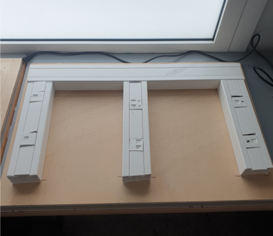
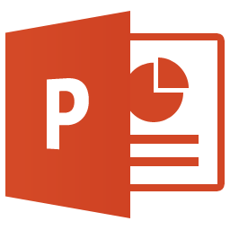
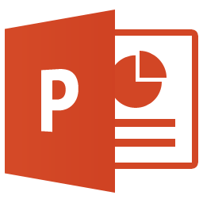
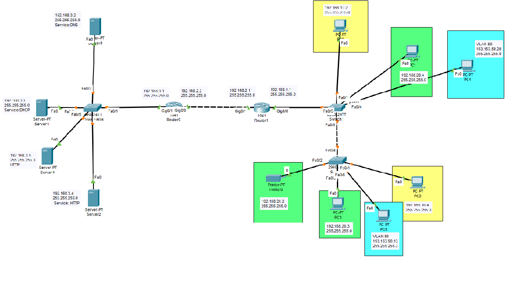
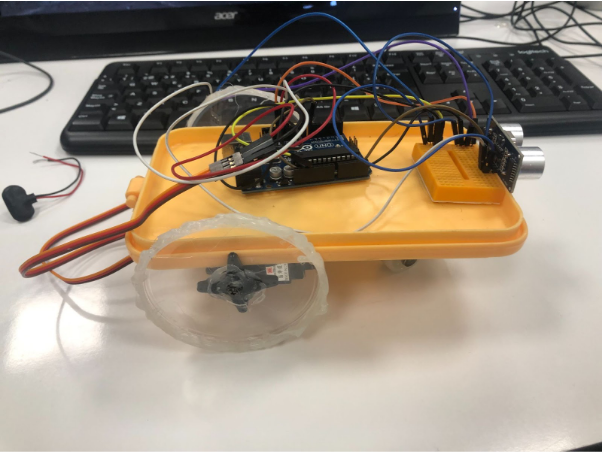

¡Hola a todos!
Mi nombre es Pol Carvajal García y me apasiona la
informática. Actualmente tengo 18 años y vivo en Vilanova i la Geltrú,
una ciudad costera cerca de Barcelona. He completado el ciclo superior
de Desarrollo de Aplicaciones Web (DAW) en el centro de formación
profesional STUCOM, después de haber finalizado también el ciclo medio
de Sistemas Microinformáticos y Redes (SIMIX). Desde pequeño he
sentido curiosidad por todo lo relacionado con los ordenadores y la
tecnología. Me encanta experimentar con el código y la programación,
especialmente con CSS y HTML, y también me apasionan los videojuegos y
todo lo que tiene que ver con el diseño y creación de páginas web.
Recientemente, he tenido la oportunidad de hacer prácticas en el
colegio Salesians de Rocafort, donde adquirí experiencia real en el
sector de la informática. Mi objetivo es poder trabajar en una empresa
del sector de la tecnología, especializándome en la creación de
páginas web o en el área de redes. Estoy emocionado por seguir
aprendiendo y creciendo en este campo que tanto me apasiona.
Durante mi trayecto en la Educación Secundaria Obligatoria,
enfrenté el desafío de ser uno de los más jóvenes del grupo
debido a ser de diciembre. A pesar de la falta de entusiasmo por
algunas asignaturas. Mi perseverancia no solo me permitió
obtener el título de la ESO sin repetir ningún curso, sino
también desarrollar habilidades que sigo aplicando en mi vida
diaria. Esta experiencia me ha enseñado que con esfuerzo y
determinación, uno puede superar obstáculos y alcanzar sus
metas, independientemente de las circunstancias iniciales.
En ese camino, el apoyo de mi familia desempeñaron un papel
fundamental, dandome la confianza necesaria para enfrentar
nuevos desafíos con valentía. A medida que avanzo en mi
educación y en mi vida, sigo recordando que la perseverancia es
la clave del éxito en todas las situaciones, y mi experiencia en
la ESO sigue siendo un faro que guía mis esfuerzos hacia metas
más ambiciosas.
En septiembre de 2021, emprendí el emocionante viaje que representa el Ciclo Medio de Sistemas Microinformáticos y Redes, un hito que marcó un nuevo capítulo en mi camino educativo. Mi elección de este camino se basa en una pasión que ha sido parte de mi vida desde mi infancia: el apasionante mundo de la informática y la tecnología. Mi andadura en este campo ha sido no solo satisfactoria, sino también reveladora. A lo largo de este período de aprendizaje, he demostrado mi dedicación y destreza en el tema, lo que se refleja en la excelente calificación con la que he culminado este ciclo, consolidando mi compromiso y habilidades en esta área de conocimiento. Este logro es solo el inicio de mi compromiso continuo con la excelencia en el ámbito de la tecnología.
En septiembre de 2023, comencé el ciclo superior de Desarrollo de Aplicaciones Web (DAW) tras finalizar el ciclo medio de Sistemas Microinformáticos y Redes. Mi interés por la programación web fue decisivo para dar este paso, ya que siempre me ha fascinado todo lo relacionado con el desarrollo de sitios y aplicaciones en línea. Durante mi etapa en DAW, descubrí que la programación realmente me apasiona, especialmente en el área de frontend. Me entusiasma trabajar en la parte visual y estética de una página web, desde aplicar estilos con CSS hasta agregar animaciones y efectos que le den vida a la interfaz. Aunque también he aprendido sobre backend, y no me desagrada, mi verdadera vocación está en el frontend, donde puedo explorar toda mi creatividad para diseñar y mejorar la experiencia del usuario. Esta experiencia en DAW ha sido muy enriquecedora y me ha confirmado que quiero dedicarme profesionalmente al desarrollo web, especialmente en el área de frontend.
Comencé a hacer prácticas en el segundo año del Ciclo Medio de
Sistemas Microinformáticos y Redes en el Colegio Salesians
Rocafort. Tuvimos que completar un total de 383 horas de
prácticas.
Tuve que pasar una entrevista de trabajo en la que me hicieron
un mini examen para evaluar mi nivel de conocimientos. Durante
las prácticas, tuve la oportunidad de trabajar tanto con
software como con hardware. En el ámbito del software, tuve la
oportunidad de trabajar con Active Directory y también tuve que
crear un script para hacer copias de seguridad. Además, limpié
varios ordenadores de virus. En cuanto al hardware, conecté
discos duros en portátiles y desmonté uno para ver si se podía
reparar, entre otras tareas.
Realmente disfruté haciendo las prácticas, ya que pude adquirir
experiencia laboral y ampliar mis conocimientos en el área de
informatcia al que guio mis practicas.
Fui seleccionado para un programa de becas de erasmus donde me
dieron la oportunidad internacionalmente. Me fui a Florencia,
donde conseguí una oportunidad en una escuela. En esa escuela,
me encargué de labores relacionadas con hardware y software. En
cuanto al hardware, desmontaba computadoras y reemplazaba las
memorias RAM. En lo que respecta al software, eliminaba
usuarios, creaba nuevos perfiles y también eliminaba virus de
las computadoras.
Estas fueron mis tareas durante mi estancia en Florencia.
Fue una experiencia muy enriquecedora que disfruté mucho y de la
cual aprendí bastante.
PROXIMAMENTE

Este proyecto fue realizado durante el primer año del ciclo medio de
Sistemas Microinformáticos y Redes en STUCOM, un centro de formación
profesional. El proyecto consistió en montar una red y se llevó a cabo
por un grupo de tres personas, el cual se expandió a dos grupos de seis
personas cada uno. Para dividirnos de manera eficiente, nos organizamos
en dos equipos de tres, donde uno se encargaba de preparar las canaletas
mientras el otro trabajaba en el guion y la presentación. Los miembros
se turnaban para ir al taller o quedarse en clase trabajando en la parte
escrita del proyecto. El objetivo del proyecto era crear una tabla con
cuatro canaletas fijas, para pasar cables que conectarían las rosetas
RJ45, que permitirían la conexión del switch, el router, el servidor y
el cliente, y simular la conexión entre Madrid y Barcelona. Se requería
la creación de una tabla con canaletas, dos switches, dos routers, un
servidor y un cliente, para permitir la comunicación entre los
dispositivos. La finalidad de esta práctica era aprender a crimpar
cables y crear una red que permita la comunicación entre un servidor y
un cliente. Para evaluar nuestros conocimientos, el profesor evaluó
nuestro trabajo y examinó nuestra capacidad para solucionar problemas en
el cableado estructurado y demostrar la comunicación exitosa entre el
cliente y el servidor. Este proyecto se llevó a cabo durante todo el año
del ciclo medio, en el que nos formamos en distintos módulos para poder
realizar esta práctica.

 

Este proyecto fue realizado durante el segundo año del ciclo medio de
sistemas microinformáticos y redes en stucom, un centro de formación
profesional. El proyecto estaba compuesto por un equipo de 3 personas, y
son tres miniproyectos, de los cuales en cada miniproyecto habían tres
versiones con tres asignaturas en cada miniproyecto.
En el primer miniproyecto una asignatura era redes, otra era sistemas y
la ultima era robótica, al ser un equipo de 3 cada uno escoje una
asignatura, en el apartado de redes lo que había que crear era una red
para poder crear una empresa, esa estructura de la red se daba acabo en
el packet tracer, tambien por ultimo tuvimos que crear unas vlans para
poder comunicarse mas rapido entre departamentos del mismo rango de la
empresa, en el apartado de sistemas habia que montar en un ubuntu server
un servicio dhcp, un servicio dns y por ultimo en un windows server un
active directory, en el ultimo apartado que es robotica lo que se tuvo
que hacer fue configurar un diodo led y un sensor ntc, cuando la
temperatura estubiera muy elevada (que la temperatura se recoje con el
sensor ntc) tendría que encenderse el led rojo, despues tuvieron que
añadir un led transparente y otro verde, el led verde sirve para cunado
la temperatura estuviera correcta se encendiera el led verde avisando de
que no hay peligro, y el led blanco se encendera cada vez que el sensor
ntc mande informacion y eso significara que el sistema esta funcionando
correctamente, y por ultimo despues añadieron un buzzer para cuando la
temperatura fuera igual o mayor a 30 se encendiera el led rojo junto a
que sonara el buzzer.
En el segundo miniproyecto una asignatura era base de datos, otra era
sistemas y la ultima era robótica, en el apartado de base de datos se
tuvo que montar una base de datos con sus respectivas tablas (que una de
las tablas era quien podía acceder a la pagina web), y rellenar las
tablas con datos reales (todo lo de base de datos se tuvo que hacer
mediante codigo no se podia hacer con interfaz grafica), esta base de
datos se tiene que crear para la empresa que creamos la red
anteriormente en el anterior miniproyecto, en el apartado de sistemas en
ubuntu server hay que instalar el servicio ftp y tendrán que acceder por
el dominio que se creo en el primer miniproyecto (con el servicio bind9
(DNS)), despues tendran que instalar el servicio mysql en el servidor
para poder subir la base de datos que se a creado en el apartado de base
de datos, y por ultimo en windows server tuvieron que montar un active
directory para crear dos scripts uno que se conectara a la unidad de red
de cada departamento, y otro para cuando cierre sesión, mediante una
directiva de grupo (gpo) se haga una copia de seguridad de la carpeta
personal del usuario donde se encuentra ese usuario y se guarde en la
unidad red que debieron compartir que eso esta conectado con el
servidor, en el ultimo apartado que es robotica lo que se tuvo que hacer
fue conectar un teclado matricial y hacerlo funcionar habia que
configurarlo con 30 contraseñas el teclado matricial y si la contraseña
era correcta que diera un mensaje de autorizado y si la contraseña es
incorrecta que saliera un mensaje de acceso denegado, despues tuvieron
que añadir un sensor rtc, tuvieron que configurar 15 contraseñas en el
teclado matricial y que cuando la contraseña fuera correcta te saliera
un mensaje de que estas autorizado y saliera la hora exacta mas un
identificador de la persona que tiene esa contraseña y cuando la
contraseña sea incorrecta saliera un mensaje por pantalla de acceso
denegado, por ultimo tuvieron que añadir dos diodos leds uno verde y
otro rojo y tambien un buzzer, el led verde se activara durante 3
segundos cuando la contraseña introducida sea correcta y el led rojo se
activara junto al buzzer durante 3 segundos cuando la contraseña
introducida sea erronea.
En el tercer miniproyecto, una asignatura era PHP, otra era sistemas y
la última era robótica. En el apartado de PHP, se tuvo que hacer un
código PHP con la base de datos previamente montada para poder dar de
alta y de baja a usuarios, clientes y empleados. También se tuvo que
hacer un código PHP para poder visualizar las tablas y, por último, un
código PHP para poder filtrar por la Primary Key. En el apartado de
sistemas, tuvimos que montar el servicio Postfix y Dovecot en un
servidor Ubuntu. Después, configuramos un servicio MUA, en este caso
utilizamos Thunderbird, para montar un servicio de correo para nuestra
propia empresa. Luego, tuvimos que montar un servicio Squid, que es un
proxy web para filtrar todo lo que nuestros empleados veían en línea, y
así tener nuestro propio proxy. (Falta otro apartado). En el último
apartado, que es robótica, tuvimos que utilizar el mismo código anterior
y añadir un servomotor que funcionara como una puerta, que se abriera
durante 5 segundos si la contraseña es correcta. Después, tuvimos que
añadir una pantalla LCD para que muestre todo lo que se mostraba por el
monitor serie. (Falta otro apartado)

Este proyecto fue realizado durante el primer año de ciclo medio de
Sistemas Microinformáticos y Redes en STUCOM, donde se construyó un
robot autónomo desde cero. El proyecto requirió tanto habilidades
estéticas como de programación, y se realizó en equipo de dos personas.
El proceso de construcción del robot incluyó varias etapas, comenzando
con el diseño del robot y la adquisición de las piezas necesarias. Para
montar el robot, se agregaron dos servomotores, un sensor de
infrarrojos, una pila de 6V, una placa Arduino y una protoboard. Se
construyó el robot de tal manera que pudiera moverse de forma autónoma,
utilizando una tapa de un taper como base y las tapas de Pringles como
ruedas.
Para conectar todos los componentes, se utilizó la placa Arduino,
mientras que la protoboard proporcionó más GND y voltaje. El sensor de
infrarrojos se utilizó para detectar obstáculos cercanos y evitarlos, y
la pila se utilizó para proporcionar energía al robot. Una vez que se
construyó el robot físicamente, se procedió a programar el código. Se
declararon todas las variables necesarias, se definió el sensor de
infrarrojos como entrada o salida, y se indicó lo que debían hacer las
ruedas cuando detectaran un obstáculo.
En resumen, el proyecto consistió en construir un robot autónomo desde
cero, incluyendo la estética y la programación. Se realizó en equipo de
dos personas y se construyó utilizando una variedad de componentes,
incluyendo servomotores, un sensor de infrarrojos, una placa Arduino,
una protoboard y una pila de 6V. Una vez construido, se programó el
robot para que pudiera moverse de forma autónoma y evitar obstáculos
cercanos. El proyecto se completó al final del ciclo medio.

En este proyecto, realizado durante el primer año del ciclo superior de
Desarrollo de Aplicaciones Web (DAW), trabajé junto a dos compañeros
para desarrollar una página web enfocada en la realización de testeo de
videojuegos. Tras analizar diversas ideas, decidimos centrarnos en este
tema ya que, al revisar Google Analytics, descubrimos que era una
búsqueda muy popular entre los usuarios.
El proyecto incluyó una fase inicial de análisis y benchmarking, en la
que investigamos y evaluamos páginas web similares para entender mejor
qué elementos y funcionalidades eran más valorados en este tipo de
sitios. Luego, pasamos al diseño, creando un boceto inicial en Figma
para definir la estética y estructura de la página.
Con el diseño establecido, comenzamos a desarrollar el código,
implementando todo el aspecto visual. Posteriormente, añadimos
animaciones y funcionalidades utilizando JavaScript y PHP para mejorar
la experiencia de usuario e interactividad. Este proyecto nos permitió
aplicar conceptos clave de análisis y desarrollo, además de afianzar
nuestras habilidades en programación web y diseño.